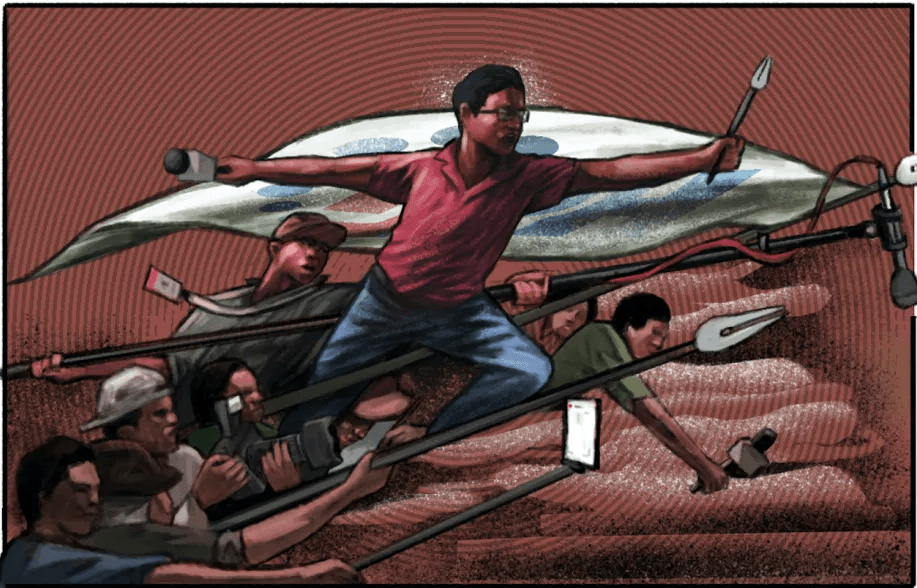

Good News > Press freedom alarm over treatment of Philippine media in 2022 elections.
Author: Cherry Salazar | March 15, 2022
The National Union of Journalists of the Philippines (NUJP) and Center for Media Freedom and Responsibility (CMFR) have expressed alarm over attacks and hostility against the media in the lead-up to the elections on May 9.
The campaign period, which began on Feb. 8, saw election-related incidents such as the banning of reporters in campaign events, refusal by candidates to attend media-hosted debates, a spate of distributed denial of service (DDoS) attacks on news websites during presidential interviews, and online hostility against news organizations and reporters in relation to their coverage of the candidates.
NUJP chair Jonathan de Santos said access to campaigns was a unique challenge during the 2022 campaign, not because of pandemic restrictions but due to some candidates’ efforts to manage the news media.
“May constraints on coverage. Pili lang. [Example], accredited naman ako pero galing ako sa newsroom na ayaw mo, hindi mo ako hahayaang mag-cover…. Or meron ngang ambush interview pero pre-screened naman ‘yung ambush interview tapos isang tanong lang,” de Santos told the Philippine Center for Investigative Journalism (PCIJ).
(There are constraints on coverage. They’re choosy. For example, I’m accredited with them but I’m from a newsroom they don’t like, so they won’t let me cover. Or there’s an ambush interview but it’s pre-screened and only one question is allowed.)
These restrictions have affected important public discourse to inform voters about the candidates, said Center for Media Freedom and Responsibility (CMFR) executive director Melinda Quintos de Jesus.
Banning reporters in campaign eventsRappler contributor Sherwin De Vera remembered arriving at least five hours before the caravan of the Uniteam slate in Ilocos Sur on Feb. 17. In the afternoon, when presidential candidate Ferdinand “Bongbong” Marcos Jr. met with local officials, the police barred De Vera and photojournalist Edwin Mangoba from the building. They were also not allowed to cover the grand rally that same evening.
The two were given no explanation. De Vera reported earlier on the same day that several barangay health workers wearing Department of Health-marked shirts attended the event, prompting a reminder from the Department of Health to its staff against participation in political activities.
“Kung nare-restrict ang access ng media para i-cover itong mga event na ito, ibig sabihin, napagkakaitan din ang mga mamamayan ng sapat na information sa mga kandidato,” he added.
(If the media’s access to cover these events is restricted, that means the public is also being denied access to information to these candidates.)
Marcos had also been selective in his attendance to presidential debates and forums. In January, Marcos accused veteran journalist Jessica Soho of being “biased” as he justified his refusal to attend the GMA News presidential interviews.
Online, verbal attacksPCIJ monitored at least nine incidents of DDoS attacks against news websites, including those of GMA News and CNN Philippines during the airing of their presidential interviews.
A DDoS attack is an attempt to overwhelm the bandwidth or resources of a web server by flooding it with multiple traffic requests, making the web site slow or unavailable. It is a form of unauthorized access and interference in a computer system or server, which is illegal in the Philippines under Republic Act No. 8792, or the Electronic Commerce Act.
These cyberattacks also affect the delivery of information to the public, De Santos said. “Aanhin mo ang istorya kung di naman mababasa?” (What good will your story do if no one can read it?)
Mitigating measures to counter these online attacks can be costly, draining the already limited resources of newsrooms.
Online hostility against news organizations and reporters are also commonplace.
Before the campaign period, candidates themselves led verbal attacks against journalists. Apart from Marcos calling Jessica Soho “biased,” his senatorial candidate Larry Gadon attacked foreign correspondent Raissa Robles after she posted comments about Marcos’ tax conviction.
Killings before campaign periodCMFR’s executive director described attacks against the media as attacks against the “heart of society.”
“The heart makes it possible for blood to flow through the body… The mechanism of journalism goes to platforms, such as news sites, and television and radio programs. All these platforms of communication are what makes the flow of support,” De Jesus said.
“If you attack these, then you are sickening society. You are going to make a society that is either unable to do anything for itself or highly dependent only on the forces of power,” she added. “That power is usually linked with violence and coercion.”
The Philippines is the seventh most dangerous country in the world for journalists, according to New York-based Committee to Protect Journalists, which releases an Impunity Index that ranks countries worldwide based on the number of journalists killed and the prevalence of perpetrators going free.
Two radio commentators were killed in Davao del Sur and Sultan Kudarat between the filing of candidacies in October 2021 and the start of the campaign period in February 2022. Investigations were called to determine if the deaths of radio commentator and reporter Orlando Dinoy and radio commentator Jaynard Angeles were related to their work in the news media.
Red-taggingOutside of election-related incidents, Baguio Correspondents and Broadcasters Club Inc. president Aldwin Quitasol heard a shot fired and saw two men speed off on a motorcycle while he was walking home along a dimly lit portion of the city on March 1.
Quitasol has been a vocal critic of the government’s counterinsurgency strategy. In January, the police and military invited Quitasol and other activists in the city to attend a “dialogue” under the Community Support Program White Area Operation.
The red-tagging of journalists, along with other members of the civil society, is a serious issue, said De Jesus.
The National Task Force to End Local Communist Armed Conflict (NTF-Elcac) had branded several journalists and news organizations as communist allies, without even citing intelligence sources, which led to a barrage of online harassment and threats against media workers.
“This administration has not developed a confidence in the media and for working with one another,” De Jesus said. “That’s also because the NTF-Elcac, designated as an agency to eliminate communism, is using mechanisms of red-tagging and is labeling journalists as enemies of the state.”
In 2016, a Presidential Task Force on Media Security (PTFoMs) was created under the Administrative Order No. 1. But De Jesus of CMFR said the agency, which was attached to the Office of the President and tasked to investigate and act on cases of media violence, did not even coordinate with journalist groups.
“From the very beginning, there was no shared information… They work on their own, but the idea of state protection should be linked to the efforts of those working in journalism themselves,” De Jesus said.
PTFoMS executive director Joel Egco, a former journalist, is also the spokesperson for media engagements of NTF-Elcac.
PCIJ has reached out to the task force but has not received any response as of this writing.
De Santos said it was important for journalists to diligently report attacks, show solidarity with each other, and demand government action to prevent these attacks.
“If you look at it, the responsibility of keeping the media safe is not upon us… Shouldn’t it be the responsibility of the government to ensure that we have an environment that is conducive to press freedom and a free flow of information? So it’s really up to them,” De Santos said.
Tweet this article
"News That Hits Home, Hundred Stories, One Truth"
Copyright © Calacday & Escanilla News 2022. All Rights Reserved.